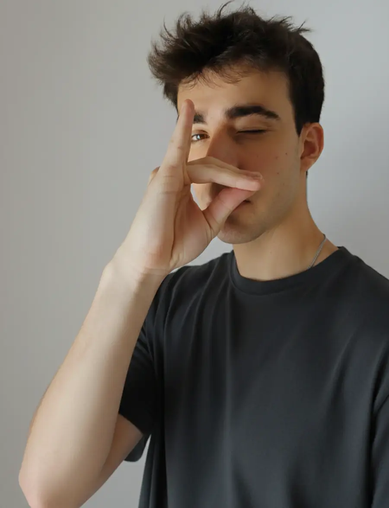
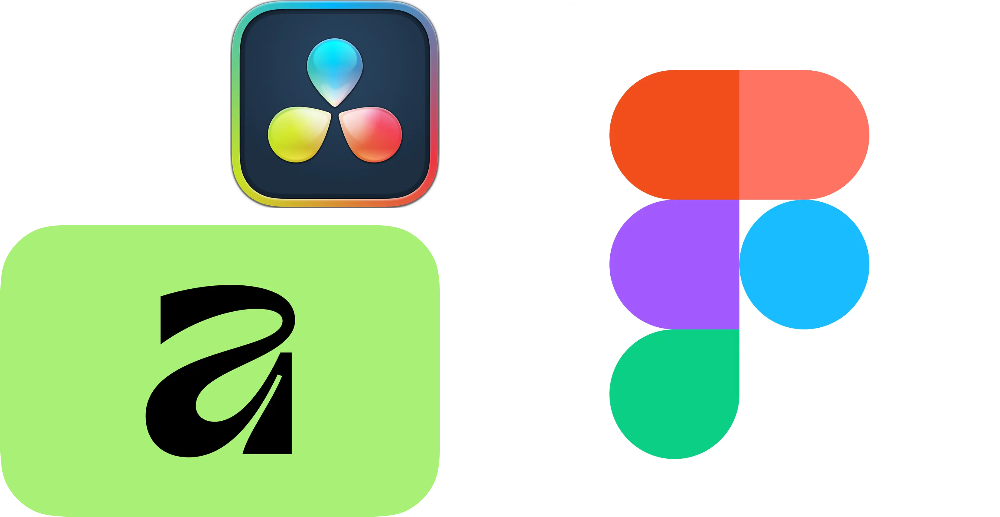
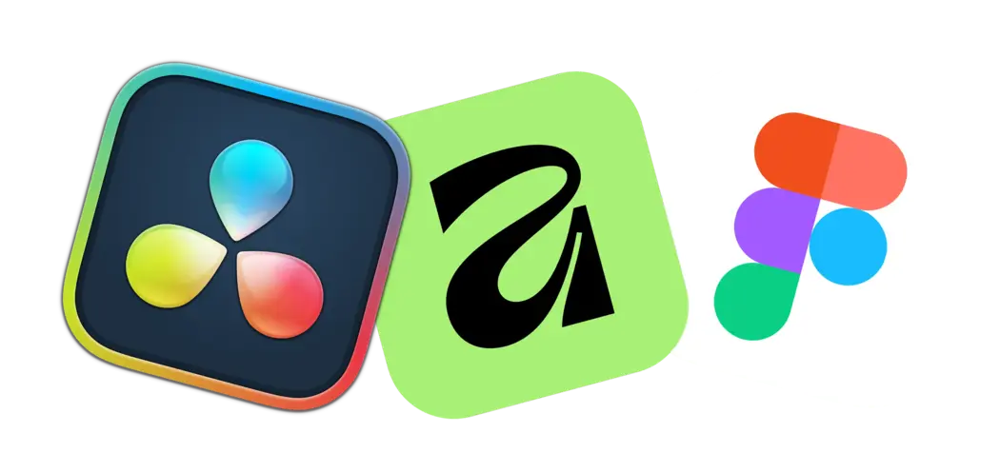
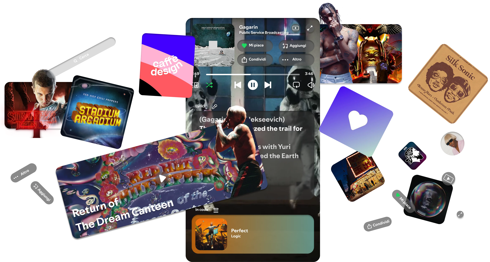
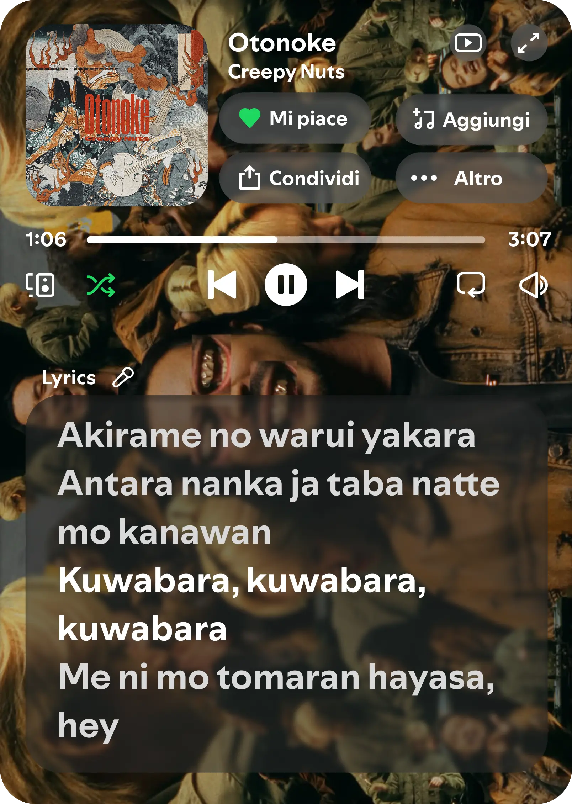
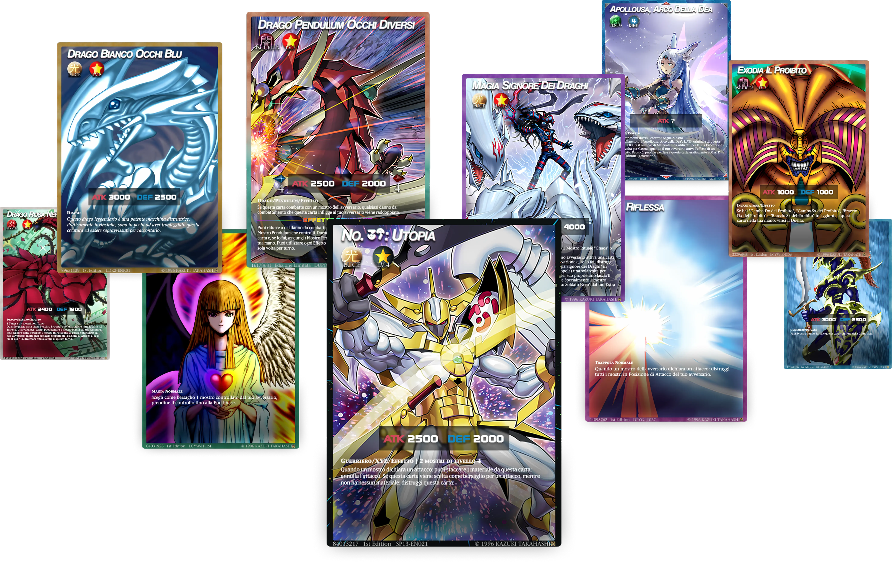
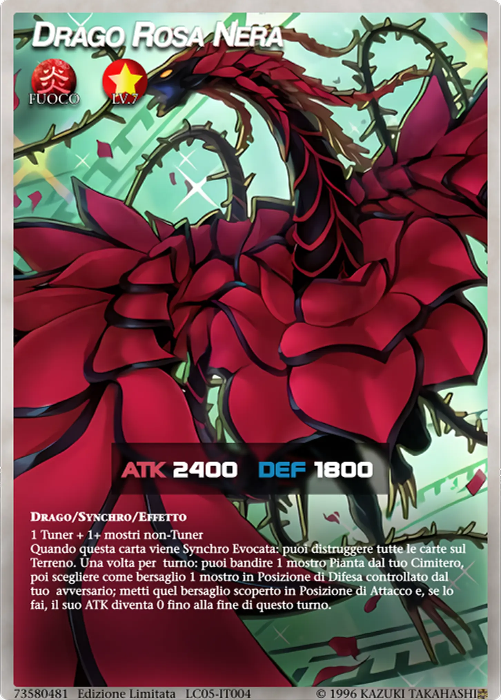

Design, musica, sport, tecnologia e anime. Giusto un introduzione a Samuele Serafini, aspirante UX/UI designer di 22 anni.
Design, musica, sport, tecnologia e anime.
Giusto un introduzione a Samuele Serafini, aspirante UX/UI designer di 22 anni.

Però la sera sono stanco dopo l'uni quindi o suono o guardo qualche anime...
Mi piace il mondo della comunicazione, della sociologia e della psicologia. Qui sotto ci sono cose succose. Scorri dai
Ma prima... ecco i tools che utilizzo
Però la sera sono stanco dopo l'uni quindi o suono o guardo qualche anime...
Mi piace il mondo della comunicazione, della sociologia e della psicologia. Qui sotto ci sono cose succose. Scorri dai
Ma prima... ecco i tools che utilizzo





SPOTIFY REDESIGN


YU-GI-OH! CARD REDESIGN